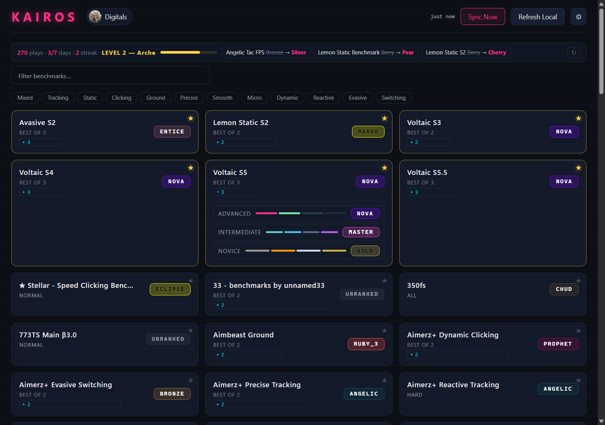
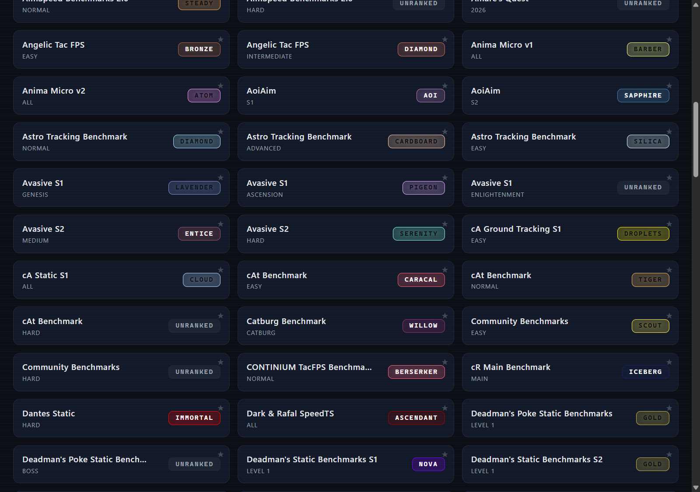
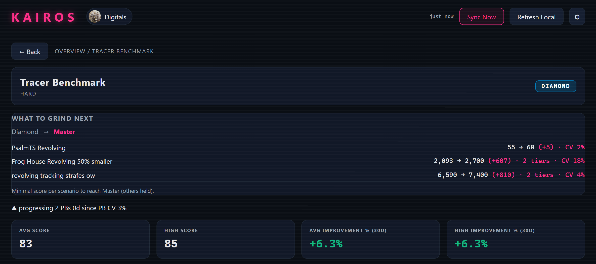
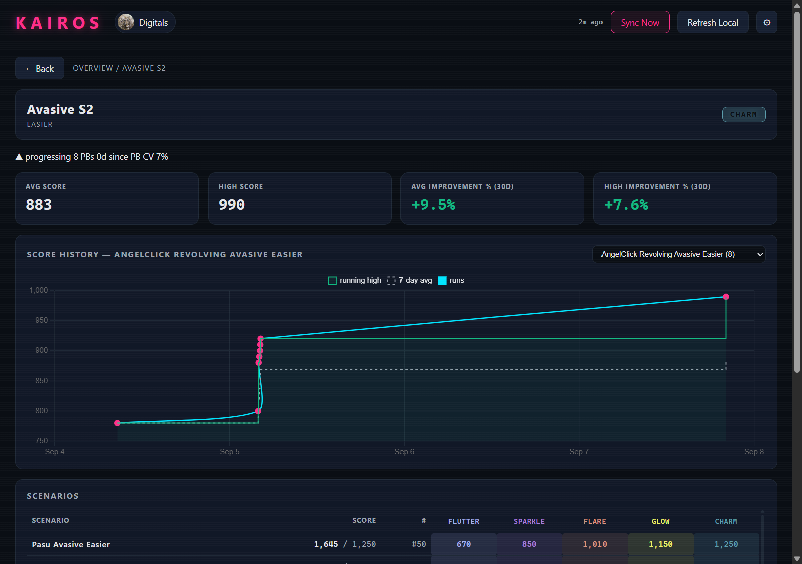
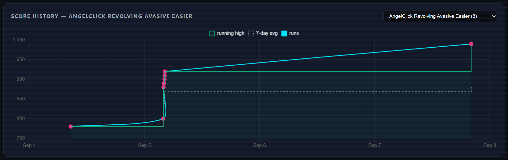

Track every benchmark. Watch ranks climb.
Per-scenario improvement over time — in a neon-soaked native app. No login, no accounts. Your data stays in a local file on your PC.

Everything the grind needs, nothing it doesn't.All ranks recomputed locally by Kairos' own engine — the server's stored rank is only a fallback.
Reverse-engineered from evxl.app: Voltaic energy, harmonic / top-N / count-based methods and more. Verified against live benchmarks.
Every sync diffs your two newest snapshots per benchmark. Rank moves? A RANK UP toast with old → new tier, or one summary when several shift.
A background watcher reads KovaaK's Stats folder while the app is open — new sessions land in your charts on their own. No refresh click.
Every benchmark tracked on evxl.app — Voltaic, Revosect, PureG, Aimerz+ and the rest — with official rank names and colors.
Quick pass for your mains, Deep Scan for everything. Smart sync skips benchmarks whose CSVs haven't changed; throttles get patient retries.
Score-history chart (local plays + snapshots, deduplicated), 7-day average, running high, avg/high scores, 30-day improvement %. Stale non-PB syncs never pollute the charts.
Each benchmark page names the cheapest per-scenario scores for the next tier — probed against the local engine, so exact for every method family. Targets cap at each scenario's ladder top, so they're always achievable; when no single scenario can carry you, you get a numbered rung-by-rung plan instead.
Filter the grid by name, pin benchmarks to the top. Pins survive restarts. Registry updater keeps new seasons coming without a rebuild.
12 tabs mirroring evxl's own grouping — Tracking, Static, Clicking, Micro, Dynamic, Evasive and more. Multi-select, combined with the name search; only pure benchmarks match a style tab, everything unspecialized sits under Mixed.
No accounts, no telemetry — only public APIs. Live API tests skip unless you opt in. Auto-sync on launch with a “last synced X ago” indicator.
Straight from the app.Click any image to zoom. All captured live from v0.1.7.




Three public sources in, one local file out.Nothing is uploaded anywhere. Ever.
Scores, ranks and leaderboard positions. No login needed — only public endpoints.
Finds your profile plus benchmark and rank definitions, cached with a version stamp.
*.csv local play history, watched live while the app runs. Refresh Local re-scans without touching the network.
%LOCALAPPDATA%\kairos\store.db — back it up, move it, it's yours.The tracker that tells you what to play next.evxl.app shows where you stand — Kairos computes how to move.
| Kairos | evxl.app | Spreadsheet | |
|---|---|---|---|
| Next-tier targets | Exact, per scenario | Ranks only | Hand-computed |
| Rank source | Recomputed locally | Server rank (often stale) | Manual lookup |
| Local plays | Automatic CSV watcher | Not tracked | Manual entry |
| Login needed | None | None | Google account |
| Works offline | Yes, local DB | No | Yes |
Running in under a minute.Windows 10/11 · free · MIT licensed
# needs: git · rust · node 24 git clone https://github.com/Digitals06/kairos.git cd kairos\crates\kovaaks-tauri\ui npm install && npm run build cd ..\src-tauri cargo build --release --features custom-protocol
Full steps in the README. If Kairos helps your grind, support it on Ko-fi ☕.
Shipped when done and verified. No dates.Tracked in ROADMAP.md — open development, public but small.